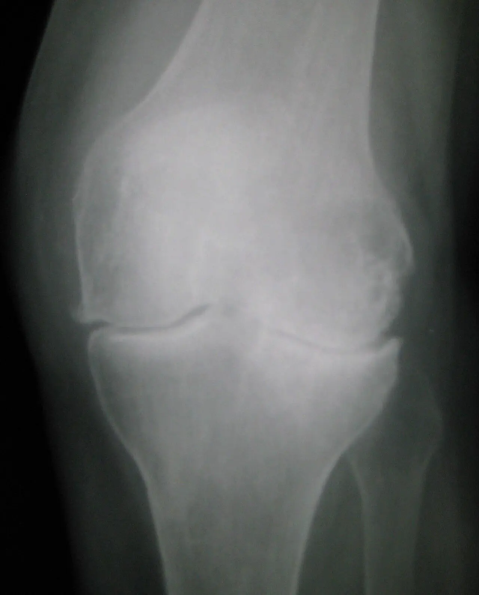

الغضروف المفصلي
يغطي نهايات عظم الفخذ والساق ويقلل الاحتكاك. تراجع سلامته قد يترافق مع تغيّر في العظم وبطانة المفصل.
خشونة الركبة تغيّر تدريجي يصيب المفصل ككل، وليس الغضروف وحده. قد يظهر الألم عند المشي أو الدرج ثم يؤثر في النوم والحركة اليومية. يساعد فهم الأعراض وتقوية العضلات وضبط الأحمال على تحسين الوظيفة، بينما تُناقش الجراحة عندما يبقى تأثير الحالة كبيرًا رغم العلاج المناسب.



يغطي نهايات عظم الفخذ والساق ويقلل الاحتكاك. تراجع سلامته قد يترافق مع تغيّر في العظم وبطانة المفصل.
وسادتان توزعان الحمل داخل الركبة؛ يختلفان عن الغضروف الذي يغطي سطح العظم.
تساعد على التحكم بالحركة. تقوية العضلات تحسّن الوظيفة حتى عندما تبقى تغيّرات الأشعة.
يظهر ألم مرتبط بالنشاط وتيبس بعد الجلوس أو عند بداية الحركة، وقد يحدث تورم متقطع. تتفاوت الأعراض من يوم إلى آخر؛ زيادة الألم بعد نشاط طويل لا تعني بالضرورة حدوث تلف جديد.
تتداخل عوامل العمر والوراثة والوزن والإصابات السابقة ومحور الطرف. الخشونة ليست نتيجة استخدام المفصل وحده، ولا يتطور المرض بالسرعة نفسها لدى جميع المرضى.
الركبة الساخنة بشدة مع حمى، أو التورم المفاجئ، أو العجز عن تحميل الوزن بعد إصابة يحتاج تقييمًا أسرع. التيبس الطويل صباحًا أو إصابة عدة مفاصل قد يستدعي البحث عن مرض التهابي.
نقيّم المشي ومدى الحركة والثبات وقوة الفخذ وموضع الألم. يسأل الطبيب عن النوم والعمل والمسافة الممكنة للمشي، لأن أثر الأعراض أهم من درجة الأشعة وحدها.
الأشعة السينية، وقد تُجرى أثناء الوقوف، توضح المسافة المفصلية والمحور والنتوءات. تُطلب عندما تساعد على تأكيد التشخيص أو استبعاد سبب آخر أو التخطيط للجراحة؛ الرنين ليس فحصًا روتينيًا للخشونة الواضحة.
لا يوجد تحليل دم يثبت الخشونة. قد تُطلب تحاليل أو سحب سائل المفصل عند الشك بالعدوى أو النقرس أو الالتهاب، بدل افتراض أن كل تورم سببه الخشونة.
يُبنى برنامج تدريجي لتقوية الفخذ والورك وتحسين التحمل. المشي على دفعات أو الدراجة أو التمارين المائية خيارات قابلة للتعديل. عند زيادة الوزن، يفيد خفض مستدام مع تغذية مناسبة؛ لا يشترط الوصول إلى وزن مثالي لبدء التأهيل.
قد تساعد مضادات الالتهاب الموضعية، ثم الأدوية الفموية المناسبة بعد مراجعة الكلى والمعدة والقلب والأدوية الأخرى. الكورتيزون قد يخفف الأعراض مؤقتًا. لا يُنصح بالهيالورونيك روتينيًا، وتتفاوت أدلة البلازما؛ لا توجد حقنة تضمن إعادة الغضروف الطبيعي.
يُناقش عندما يحد الألم والقصور الوظيفي من الحياة رغم خطة غير جراحية مناسبة. يشمل القرار توقعات المريض والصحة العامة ومخاطر العدوى والجلطات والتيبس. تنظيف المفصل بالمنظار لا يعالج الخشونة المنتشرة بحد ذاتها.
المستوى لا يعتمد على درجة الأشعة، بل على الألم والقوة والوظيفة والقدرة البدنية.
الهدف: تنشيط وتقوية عضلة الفخذ.
جرعة بداية: 10 مرات، تثبيت 5–10 ثوانٍ.
خطأ شائع: رفع الساق بدل شد الفخذ.
الهدف: تقوية الفخذ بحمل منخفض نسبيًا.
جرعة بداية: 8–12 × مجموعتين.
خطأ شائع: ثني الركبة أثناء الرفع.
الهدف: تحسين مدى الحركة وتقليل التيبس.
جرعة بداية: 10–15 مرة.
خطأ شائع: إجبار الركبة بعنف على الثني.
الهدف: تقوية عضلات الورك الجانبية.
جرعة بداية: 8–12 × مجموعتين.
خطأ شائع: إمالة الجذع للتعويض.
الهدف: تحسين القوة الوظيفية اليومية.
جرعة بداية: 8–12 × مجموعتين.
التدرج: خفض ارتفاع الكرسي أو تقليل الاعتماد على اليدين.
الهدف: تقوية الفخذ والأرداف وتحسين التحكم.
جرعة بداية: 8–12 × مجموعتين.
خطأ شائع: سقوط الركبتين للداخل.
الهدف: تقوية الطرف وتحسين صعود الدرج.
جرعة بداية: 8–10 لكل طرف.
التدرج: زيادة ارتفاع الدرجة تدريجيًا.
الهدف: تحسين التحكم أثناء نزول الدرج.
جرعة بداية: 6–10 مرات.
خطأ شائع: فقدان التحكم بمحور الركبة أو الحوض.
الهدف: زيادة قوة عضلات الطرف السفلي.
القاعدة: مقاومة متدرجة وضمن مدى مريح.
خطأ شائع: زيادة الحمل أسرع من قدرة المريض.
الخيارات: المشي، الدراجة الثابتة أو التمارين المائية.
الهدف: اللياقة والتحمل وصحة المفصل العامة.
التدرج: زيادة المدة تدريجيًا حسب التحمل.
زد التكرارات ← ثم المدى ← ثم المقاومة ← ثم انتقل إلى مستوى أعلى.
ألم حاد غير معتاد، تورم واضح ومتزايد، عدم القدرة على تحميل الوزن، قفل حقيقي للركبة أو إصابة جديدة.
لا توجد حقنة واحدة تناسب جميع المرضى، ولا ينبغي تقديم أي حقن على أنها تعيد بناء الغضروف بصورة مؤكدة.
قد يخفف الألم مؤقتًا لدى بعض المرضى، خصوصًا عندما تكون الأعراض نشطة.
قد يستفيد بعض المرضى، وخصوصًا في الحالات الخفيفة إلى المتوسطة، لكنه لا يُنصح به روتينيًا لكل المرضى.
قد يحسن الأعراض لدى بعض المرضى، لكن طرق التحضير والبروتوكولات تختلف ولا توجد نتيجة مضمونة.
نناقش الجراحة عندما يستمر الألم أو التيبس أو التشوه في تقييد المشي والنوم والأنشطة اليومية، رغم تجربة العلاجات غير الجراحية المناسبة. ويُتخذ القرار بعد تقييم شامل للأعراض والفحص والأشعة وأهداف المريض.
لا نتعجل الجراحة ولا نؤخرها دون سبب؛ نختارها عندما تصبح الطريق الأنسب لتخفيف الألم واستعادة الحركة بأمان.
تابع القدرة على المشي والقيام من الكرسي والنوم واستخدام المسكن، وليس الألم وحده. زد النشاط على خطوات، وراجع الجرعة إذا تكرر التورم أو ظل التفاقم واضحًا في اليوم التالي.
يبدأ التأهيل بحسب خطة الفريق، مع الوقاية من الجلطات والعناية بالجرح. يتدرج التحسن خلال أشهر؛ الوصول إلى ركبة وظيفية يحتاج مشاركة منتظمة، ولا توجد مدة واحدة تناسب الجميع.
خشونة الركبة تصيب منظومة المفصل كاملة، لذلك لا تُبنى الخطة على صورة الأشعة وحدها.
قد تتغير الغضاريف والعظم تحت الغضروف وبطانة المفصل وتظهر نتوءات عظمية وتغيرات في المحور؛ لذلك فالخشونة ليست مجرد «تآكل غضروف» منفصل.
قد تكون التغيرات الشعاعية واضحة مع أعراض محدودة، أو تكون الأشعة أقل وضوحًا مع ألم مؤثر. نربط الصورة بالنوم والمشي والدرج ومدى الحركة والوظيفة.
ليس روتينيًا عند الخشونة الواضحة، لكنه قد يفيد عند أعراض غير معتادة أو شك بتمزق أو إصابة أخرى لا تفسرها الأشعة والفحص.
رفع القوة والتحمل والتحكم وتقليل أثر الألم، لا «إعادة الغضروف». يبدأ الحمل تدريجيًا ويُعدل وفق الاستجابة.
عندما يبقى الألم والقصور الوظيفي مؤثرين رغم علاج غير جراحي مناسب، وبعد مناقشة الصحة العامة والتوقعات والمخاطر.
لا توجد حقنة أو مكمل يضمن إعادة الغضروف الطبيعي. تختلف الأدلة على الحقن، ويُناقش استخدامها بحسب الحالة والتوقعات.
إجابات عملية تكمل الشرح، وتساعدك على مناقشة الخطة مع الطبيب.
غالبًا لا. النشاط المناسب جزء من العلاج، لكن مقدار المشي وشدته يجب أن ينسجما مع الأعراض والقدرة الحالية.
ليس بالضرورة. الأصوات وحدها لا تكفي لتشخيص الخشونة.
لا. القرار يعتمد بدرجة كبيرة على الأعراض والوظيفة وتأثير الحالة في حياة المريض.
غالبًا لا في الحالات التقليدية، إلا إذا كان هناك سبب آخر محتمل للأعراض.
غالبًا الأفضل تعديل النشاط وشدته بدل التوقف الكامل عن الحركة.
لا ينبغي تقديم الكورتيزون أو HA أو PRP على أنها تعيد الغضروف الطبيعي بصورة مؤكدة.
قد يثير النزول ألمًا أكبر بسبب متطلبات التحكم العضلي. يمكن استخدام الدرابزين وتعديل ارتفاع الخطوة وتقوية الفخذ بدل منع الدرج نهائيًا.
قد تفيد عند الألم أو عدم الثبات، وتختار بحسب الفحص. تُستخدم العصا عادة في اليد المقابلة للطرف المؤلم بعد تعلم الطريقة الصحيحة.
يعتمد على نوع الدواء وصحتك. الاستخدام المستمر يحتاج مراجعة الفائدة والمخاطر، ولا تجمع مضادات الالتهاب من نفسك.
الألم الليلي المؤثر عنصر مهم في التقييم، لكن القرار يشمل التشخيص والوظيفة والاستجابة للعلاج والصحة العامة.
نعم، قد يبقى بعض الألم أو التيبس، وتختلف النتيجة بحسب عوامل متعددة. ناقش هدف العملية وحدودها قبل اتخاذ القرار.
الأشعات السابقة وقائمة الأدوية والأمراض المزمنة، ووصفًا لما تعجز عن فعله وما جربته من علاج ومدة الاستجابة.
إذا كان ألم الركبة يؤثر في المشي أو النوم أو النشاط اليومي، يمكن مناقشة الخيارات المناسبة لحالتك بعد التقييم.
AAOS — إرشادات خشونة الركبة غير الجراحية 2021
تختلف توصيات الإرشادات بحسب نوع الإصابة ونطاقها. الجرعات والقيود ومواعيد العودة تُفصّل بعد الفحص؛ تُذكر الفوائد المحتملة دون ضمان لنتيجة علاجية.
مصادر الرسوم وتراخيص استخدامها موثقة أسفل كل صورة. مجموعة Bioicons.